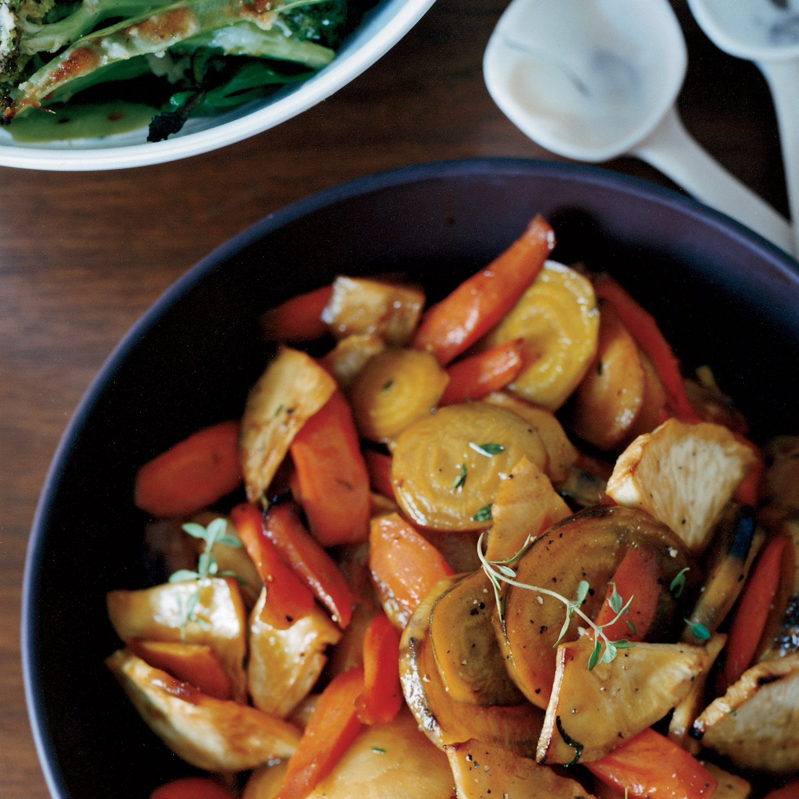

Honey Glazed Root Vegetables

Description
This recipe comes from Vikingars Gästabud (The Viking Feast), and is for four
servings. Source
Ingredients
- 1 turnip
- 2-3 carrots
- 1 slice of white cabbage (use a quarter of a head of cabbage)
- 1 leek
- butter
- honey
- salt and pepper
Steps
- Peel the root vegetables and cut them into pieces
- Boil together in slightly salted water about 5
minutes and drain
- Sauté the root vegetables in butter until soft. Let the leek and
cabbage sauté with them at the end.
- Add some honey and stir the dish carefully.
- Season with salt and pepper.